Chapter 4 Generalized Linear Models - Logit.
Next, we can talk about generalized linear models (GLMs). The GLM is how we estimate the logistic and probit regression model in R as well as the poisson and negative binomial models. We are going to focus on the logistic regression model. As a substantive example, we’re going to look at some work that I’ve done in the past. In particular, this is data that I used with Christian Davenport and Sarah Soule in an article called Protesting While Black published in the American Sociological Review in 2011. We were particularly interested in the use of arrests or violence on the part of police at protests that were characterized as either largely African American or not.
First, we can read in the data:
library(dplyr)
library(rio)
dat <- import("data/Davenport_Soule_ASR.dta") %>%
## chose variables we need for the model
select(police1, afam, arrdum, police5,
pre65, iblackpre65, ny, south, logpart,
propdam, counterd, standard2, extcont2,
govtarg, stratvar, viold, evyy) %>%
## turn afam into a factor
mutate(afam = factor(afam, labels=c("No","Yes"))) %>%
## keep only those where police were present
filter(police1 == 1) %>%
## listwise delete
na.omit()Now, let’s estimate a model of arrests (arrdum) on a set of controls and the important variables afam identifying whether or not it was an African American protest and evyy, the event year. For now, we’re not going to make an interaction between these two variables. Specifying family=binomial indicates a 0/1 variable (or that you want to use n choose k data where your dependent variable is a two columns - successes and failures). The default link is the logit link, but you can switch to probit with family=binomial(link="probit").
mod <- glm(arrdum ~ poly(evyy,3) + afam + ny + south +
logpart + propdam + counterd + standard2 +
extcont2 + govtarg + stratvar + viold,
data=dat, family=binomial)
summary(mod)##
## Call:
## glm(formula = arrdum ~ poly(evyy, 3) + afam + ny + south + logpart +
## propdam + counterd + standard2 + extcont2 + govtarg + stratvar +
## viold, family = binomial, data = dat)
##
## Coefficients:
## Estimate Std. Error z value Pr(>|z|)
## (Intercept) 0.53652 0.11649 4.606 4.11e-06 ***
## poly(evyy, 3)1 7.74804 2.32726 3.329 0.000871 ***
## poly(evyy, 3)2 8.39345 2.26072 3.713 0.000205 ***
## poly(evyy, 3)3 5.05174 2.16950 2.329 0.019884 *
## afamYes 0.31330 0.06688 4.685 2.80e-06 ***
## ny -0.51309 0.06676 -7.686 1.52e-14 ***
## south -0.24535 0.07522 -3.262 0.001107 **
## logpart -0.11038 0.01475 -7.485 7.14e-14 ***
## propdam 0.23645 0.08492 2.784 0.005364 **
## counterd -0.41626 0.08963 -4.644 3.41e-06 ***
## standard2 0.20604 0.10020 2.056 0.039750 *
## extcont2 -0.10711 0.11257 -0.952 0.341332
## govtarg -0.23341 0.05748 -4.061 4.89e-05 ***
## stratvar 0.29818 0.05346 5.577 2.45e-08 ***
## viold 0.16939 0.08799 1.925 0.054220 .
## ---
## Signif. codes: 0 '***' 0.001 '**' 0.01 '*' 0.05 '.' 0.1 ' ' 1
##
## (Dispersion parameter for binomial family taken to be 1)
##
## Null deviance: 7719.0 on 5701 degrees of freedom
## Residual deviance: 7461.1 on 5687 degrees of freedom
## AIC: 7491.1
##
## Number of Fisher Scoring iterations: 4You Try It!
Using the 2016 GSS data again:
- Make a new variable called
inewsfromnewsfromthat is 1 if the respondent gets news primarily from the internet and 0 for any other source. Make sure to keep the missing values missing. - Make a variable called
college_edfromeducwhich is coded such that 0-12 = none, 13:15 = some and 16+ = degree. - Estimate and summarise a logit model of
inewsonage,sei10,college_edandsex.
4.1 Evaluating Model Fit
With all non-linear models, we need to figure out how to interpret the coefficients and figure out how well the model fits. Let’s think about model fit, first. There are a few different things that we can do. The DAMisc package has a function called binfit() which produces measure of fit for binary models:
## Names1 vals1 Names2 vals2
## 1 Log-Lik Intercept Only: -3859.513 Log-Lik Full Model: -3730.537
## 2 D(5687): 7461.075 LR(14): 257.951
## 3 Prob > LR: 0.000
## 4 McFadden's R2: 0.033 McFadden's Adk R2: 0.030
## 5 ML (Cox-Snell) R2: 0.044 Cragg-Uhler (Nagelkerke) R2: 0.060
## 6 McKelvey & Zavoina R2: 0.057 Efron's R2: 0.046
## 7 Count R2: 0.626 Adj Count R2: 0.088
## 8 BIC: 7590.804 AIC: 7491.075This produces a number of different pseudo \(R^2\) measures that all have some analogy to the computation of \(R^2\) from the linear model. The only one that’s not really appropriate as a measure of fit is the “Count R2”. This is really just the proportion correctly predicted and needs to be adjusted for the number in the modal category to be useful - that’s what the “Adj Count R2” does.
There’s another measure of fit that may be useful, too - the proportional reduction in error (PRE) and the expected PRE (or ePRE). These can be obtained with the pre() function from DAMisc. Specifying sim=TRUE will use a parametric bootstrap to get confidence bounds for the proportional reduction in error.
## mod1: arrdum ~ poly(evyy, 3) + afam + ny + south + logpart + propdam + counterd + standard2 + extcont2 + govtarg + stratvar + viold
## mod2: arrdum ~ 1
##
## Analytical Results
## PMC = 0.590
## PCP = 0.626
## PRE = 0.088
## ePMC = 0.516
## ePCP = 0.538
## ePRE = 0.045
##
## Simulated Results
## median lower upper
## PRE 0.084 0.068 0.098
## ePRE 0.045 0.037 0.053If you wanted to look at the ROC for the model, you could do the following:
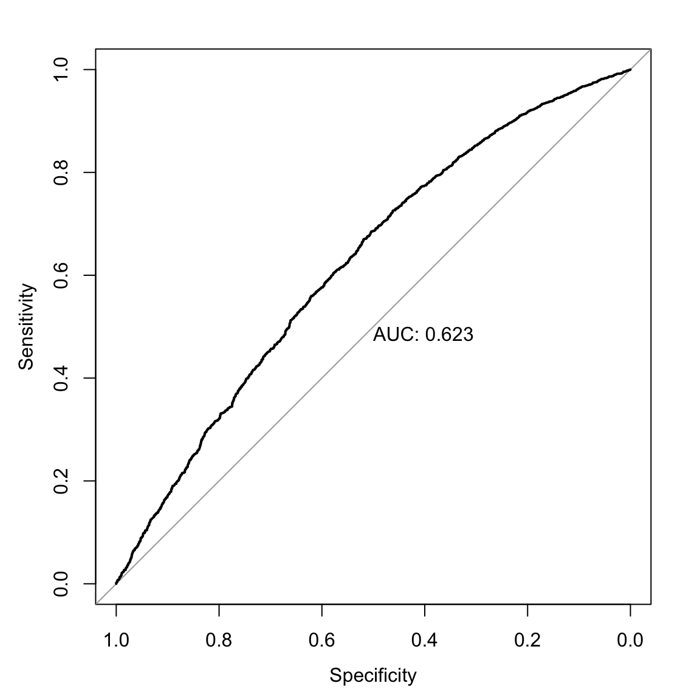
##
## Call:
## roc.formula(formula = dat$arrdum ~ predict(mod, type = "response"), print.auc = TRUE, plot = TRUE)
##
## Data: predict(mod, type = "response") in 2338 controls (dat$arrdum 0) < 3364 cases (dat$arrdum 1).
## Area under the curve: 0.623The model doesn’t provide us a lot of value-added, but more than zero, so we’ll move on. Note that these models are not built to maximize predictive capacity, though considering the predictive accuracy isn’t the worst thing ever.
You Try It!
How does the model you estimated above fit? Use the methods discussed above to evaluate the model of inews.
4.2 Marginal Effects
The next thing to do is to figure out what the parameter estimates mean. There are lots of ways to do this. In the logit model, like we’ve estimated here, we could exponentiate the coefficients to get the odds ratio. These can be useful for single coefficient terms, but are less useful for things like the polynomial in year where one coefficient cannot really be interpreted independent of the others.
## (Intercept) poly(evyy, 3)1 poly(evyy, 3)2 poly(evyy, 3)3 afamYes ny
## 1.7100374 2317.0322566 4418.0303543 156.2936582 1.3679333 0.5986400
## south logpart propdam counterd standard2 extcont2
## 0.7824287 0.8954906 1.2667435 0.6595099 1.2287974 0.8984265
## govtarg stratvar viold
## 0.7918282 1.3473985 1.1845790The glmChange() function in the DAMisc package calculates first differences for each of the variables. It uses a parametric bootstrap to generate confidence intervals for the differences.
## # A tibble: 12 × 8
## focal val_Low val_High fit_Low fit_High diff q_2.5 q_97.5
## <chr> <chr> <chr> <dbl> <dbl> <dbl> <dbl> <dbl>
## 1 evyy 1968.500 1969.500 0.624 0.621 -0.00296 -0.00594 -0.0000125
## 2 afam No Yes 0.623 0.693 0.0703 0.0427 0.0976
## 3 ny -0.500 0.500 0.681 0.561 -0.120 -0.149 -0.0912
## 4 south -0.500 0.500 0.651 0.594 -0.0576 -0.0926 -0.0237
## 5 logpart 3.831 4.831 0.636 0.610 -0.0259 -0.0325 -0.0192
## 6 propdam -0.500 0.500 0.595 0.650 0.0555 0.0161 0.0938
## 7 counterd -0.500 0.500 0.670 0.573 -0.0975 -0.136 -0.0555
## 8 standard2 0.500 1.500 0.598 0.647 0.0484 0.0000680 0.0907
## 9 extcont2 -0.500 0.500 0.635 0.610 -0.0252 -0.0767 0.0243
## 10 govtarg -0.500 0.500 0.650 0.595 -0.0548 -0.0805 -0.0273
## 11 stratvar 0.500 1.500 0.587 0.657 0.0699 0.0452 0.0941
## 12 viold -0.500 0.500 0.603 0.643 0.0398 -0.00303 0.0824##
## Term Contrast Estimate Std. Error z Pr(>|z|) S 2.5 % 97.5 %
## afam Yes - No 0.0703 0.01474 4.770 < 0.001 19.1 0.041418 0.099193
## counterd 1 - 0 -0.1015 0.02226 -4.560 < 0.001 17.6 -0.145134 -0.057876
## evyy +1 -0.0030 0.00165 -1.816 0.06929 3.9 -0.006244 0.000237
## extcont2 1 - 0 -0.0255 0.02712 -0.939 0.34766 1.5 -0.078623 0.027684
## govtarg 1 - 0 -0.0562 0.01373 -4.091 < 0.001 14.5 -0.083097 -0.029266
## logpart +1 -0.0263 0.00355 -7.405 < 0.001 42.8 -0.033207 -0.019307
## ny 1 - 0 -0.1257 0.01620 -7.760 < 0.001 46.7 -0.157451 -0.093950
## propdam 1 - 0 0.0537 0.01871 2.871 0.00409 7.9 0.017047 0.090403
## south 1 - 0 -0.0591 0.01827 -3.235 0.00122 9.7 -0.094931 -0.023300
## standard2 1 - 0 0.0495 0.02432 2.034 0.04192 4.6 0.001808 0.097137
## stratvar +1 0.0671 0.01193 5.623 < 0.001 25.7 0.043698 0.090461
## viold 1 - 0 0.0389 0.01987 1.956 0.05042 4.3 -0.000071 0.077837
##
## Type: responseThe output above shows a number of things. In the diffs element are the differences. The min column gives the predicted probability when the variable is held constant at the value given in the min row for the corresponding variable in the minmax element. For example, the min column entry for the logpart variable is calculated holding logpart at 0.00 and all of the other variables at the values that are in the typical row. The max column entry for the logpart variable is calculated holding logpart at 11.51 and holding all of the other variables constant at the values in the typical row. The diff column just calculates the difference in those two min and max values. The lower and upper columns (which you get if you specify sim=TRUE) are the lower and upper \(95\%\) confidence bounds.
There is a debate in the literature about what kind of effects are most representative of the “true” effect of the variable (if it even makes sense to talk about that). One approach is the one mentioned above - usually referred to as the marginal effect at means (MEM) or marginal effect at reasonable values (MER) approach. The main feature of this approach is that all of the other covariates (save the one you’re changing) are held constant at a single value. Another approach is called the average marginal effect (AME) appoach. The main feature of this approach is that one variable is changed and all other variables are held constant at their observed values. So, instead of calculating a single effect, you calculate \(n\) different effects. These different effects are then averaged across all of the \(n\) values. The glmChange2() function calculates AMEs in R.
## mean lower upper
## logpart -0.05177293 -0.06545373 -0.03827276marginaleffects::avg_comparisons(mod,variables = list("logpart" = "sd"), comparison = "difference") # ???##
## Estimate Std. Error z Pr(>|z|) S 2.5 % 97.5 %
## -0.0524 0.00697 -7.52 <0.001 44.1 -0.0661 -0.0388
##
## Term: logpart
## Type: response
## Comparison: (x + sd/2) - (x - sd/2)Note here that the estimate of the difference is about the same, but the confidence bounds are a lot narrower here. This isn’t a generalizable result, but it does happen to be the case here. Both of these results are first differences. These tell us how the predicted probability changes as a function of a discrete change in the independent variable of interest.
The mathematical expression for the first difference is as below. For example, we could write the model above as:
\[\log\left(\frac{Pr(\text{Arrest})}{Pr(\text{No Arrest})}\right) = a + d\text{logPart} + XB\]
where logPart is the log of protest participation with coefficient \(d\) and \(X\) are all of the other covariates with coefficient vector \(B\). A discrete change, is:
\[D = F(a + b(\overline{\text{logPart}} + .5\delta) + x_{h}B) - F(a + b(\overline{\text{logPart}} - .5\delta) + x_{h}B)\]
where \(\delta\) is the amount of change being evaluated (often either a unit or a standard deviation) and \(x_h\) is a vector of hypothetical values for the other covriates and \(F()\) is the CDF of the probability distribution. This was for the MER approach. The AME approach is:
\[\bar{D} = \frac{1}{n}\sum_{i}^{n}\left(F(a + b(\text{logPart}_i + .5\delta) + x_{i}B) - F(a + b(\text{logPart}_i - .5\delta) + x_{i}B)\right)\]
An alternative approach, particularly for continuous covariates, is to calculate the marginal effect - the partial first derivative of the predicted probabilities with respect to the variable of interest. In this case, it would be:
\[M = \frac{\partial \hat{p}}{\partial \text{logPart}} = b\times f\left(a + b\text{logPart}_{h} + x_hB\right)\]
where \(f()\) is the PDF of the appropriate distribution (logistic for logit or normal for probit) and the \(h\) subscript identifies a hypothetical value (or vector of values). The above would be the MER approach and the AME approach would be:
\[M = \frac{\partial \hat{p}}{\partial \text{logPart}} = \frac{1}{n}\sum_{i}b\times f\left(a + b\text{logPart}_{i} + x_iB\right)\]
This finds the slope of the line tangent to the logit curve at the vector of covariate values in the calculation. The marginaleffects package helps us calculate these values. The avg_comparisons() function uses the average marginal effect approach.
mod <- glm(arrdum ~ stats::poly(evyy,3) + afam + ny + south +
logpart + propdam + counterd + standard2 +
extcont2 + govtarg + stratvar + viold,
data=dat, family=binomial)
marginaleffects::avg_comparisons(mod,variables="logpart",comparison="dydx")##
## Estimate Std. Error z Pr(>|z|) S 2.5 % 97.5 %
## -0.0255 0.00334 -7.63 <0.001 45.3 -0.0321 -0.019
##
## Term: logpart
## Type: response
## Comparison: dY/dXYou Try It!
Use the methods discussed above to understand the substantive impact of the variables in the inews model.
4.3 Marginal Effect Plots
Marginal effect plots work the same way here as they do in linear models. We could either use the effects package or the ggeffects package to make predictions and plot them. We will focus on the ggeffects package. Let’s look at the effect of logpart.
library(ggeffects)
library(ggplot2)
g <- ggpredict(mod, terms="logpart [n=50]")
g2 <- marginaleffects::predictions(mod,newdata=marginaleffects::datagrid(logpart=seq(0,11.51293,0.1)))
ggplot(g) +
geom_ribbon(aes(x=x,
y=predicted,
ymin=conf.low,
ymax=conf.high),
alpha=.25) +
geom_line(aes(x=x, y=predicted)) +
geom_rug(data=dat,
aes(x=logpart),
sides="b",
alpha=.25) +
theme_bw() +
labs(x = "log(Participation)",
y = "Predicted Pr(Arrest)")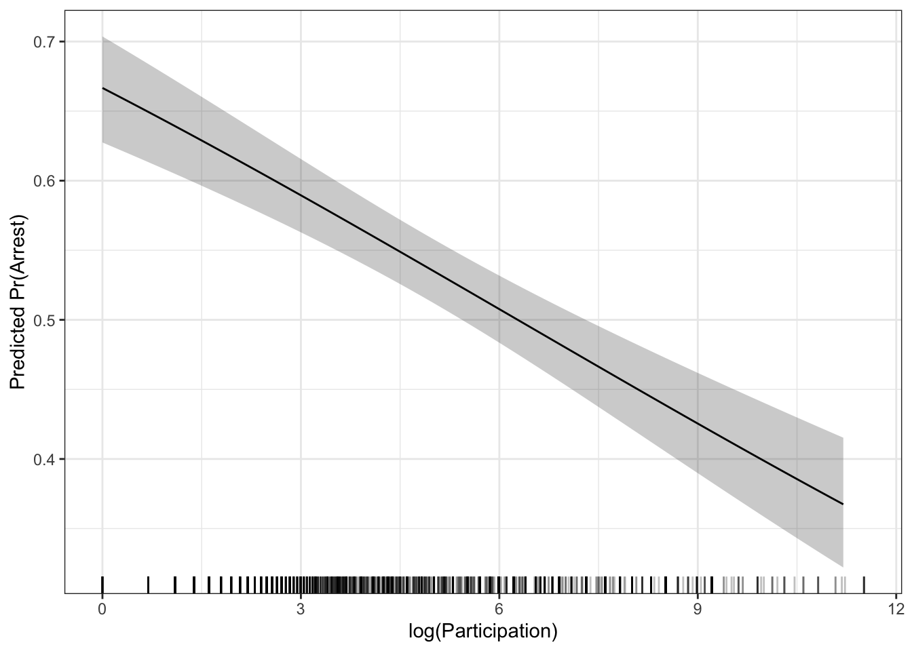
ggplot(g2) +
geom_ribbon(aes(x=logpart, y=estimate,
ymax=conf.high,
ymin=conf.low),alpha=.25) +
geom_line(aes(x=logpart, y=estimate)) +
geom_rug(data=dat,
aes(x=logpart),
sides="b",
alpha=.25) +
theme_bw() +
labs(x = "log(Participation)",
y = "Predicted Pr(Arrest)")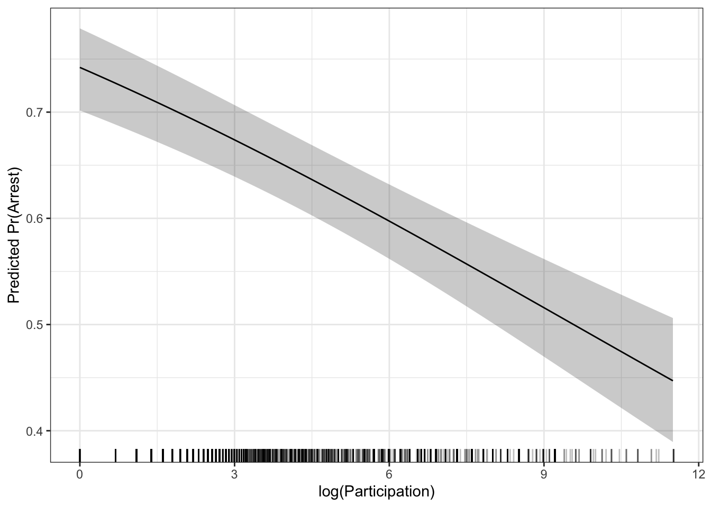
If you prefer the average marginal effect approach, there are fewer options for making a marginal effect plot. The aveEffPlot() function in the DAMisc package will do this. By default, the function will make the plot for you using R’s base graphics package. You can also use the argument plot=FALSE and returnSim=TRUE and then the data for plotting will be returned.
ap <- aveEffPlot(mod, data=dat, varname = "logpart", nvals = 35, plot=FALSE, returnSim=TRUE)
ap2 <- marginaleffects::avg_predictions(mod,variables=list(logpart=seq(0,11.51293,0.1)))ggplot(ap$ci) +
geom_ribbon(aes(x=s,
y=mean,
ymin=lower,
ymax=upper),
alpha=.15) +
geom_line(aes(x=s,
y=mean)) +
geom_rug(data=dat,
aes(x=logpart),
sides="b",
alpha=.25) +
theme_bw() +
labs(x = "log(Participation)",
y = "Predicted Pr(Arrest)")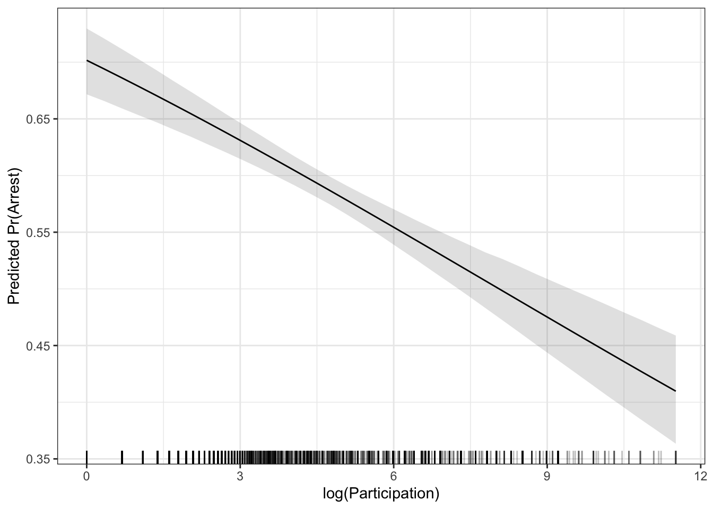
ggplot(ap2) +
geom_ribbon(aes(x=logpart, y=estimate,
ymax=conf.high,
ymin=conf.low), alpha=.25) +
geom_line(aes(x=logpart, y=estimate)) +
geom_rug(data=dat,
aes(x=logpart),
sides="b",
alpha=.25) +
theme_bw() +
labs(x = "log(Participation)",
y = "Predicted Pr(Arrest)")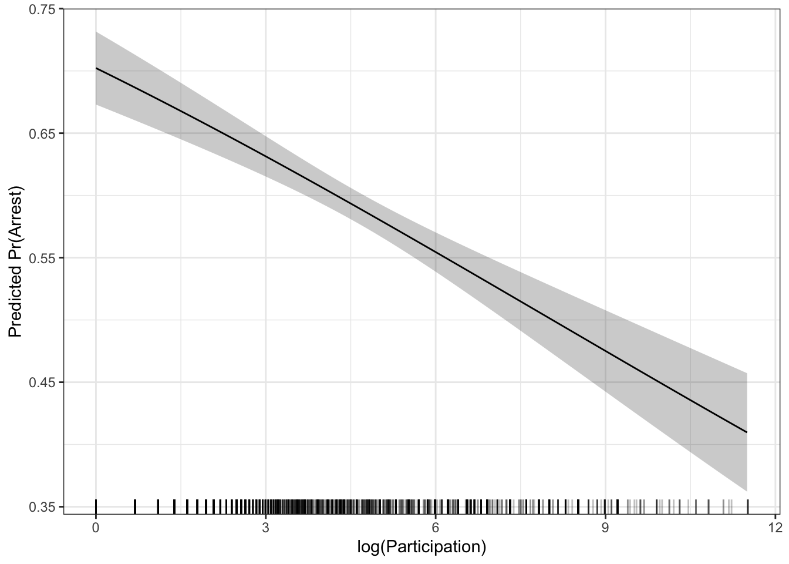 Let’s look at both of the effects together.
g <- g %>%
as.data.frame() %>%
select(x, predicted, conf.low, conf.high) %>%
mutate(type = factor(1, levels=1:2, labels=c("MER", "AME")))
ap$ci %>%
rename("x" = "s",
"predicted" = "mean",
"conf.low" = "lower",
"conf.high" = "upper") %>%
mutate(type = factor(2, levels=1:2, labels=c("MER", "AME"))) %>%
bind_rows(g, .) %>%
ggplot(aes(x=x, y=predicted)) +
geom_ribbon(aes(ymin=conf.low,
ymax=conf.high,
fill=type),
alpha=.15,
col="transparent") +
geom_line(aes(colour=type)) +
theme_bw() +
theme(legend.position = "top") +
labs(x="log(Participation)",
y="Predicted Arrests",
colour = "Effect Type",
fill = "Effect Type")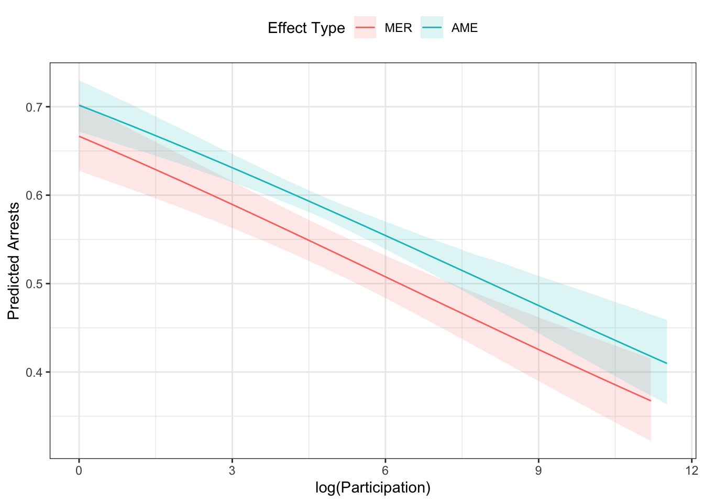
g2 <- g2 %>%
as.data.frame() %>%
select(logpart, estimate, conf.low, conf.high) %>%
mutate(type = factor(1, levels=1:2, labels=c("MER", "AME")))
ap2 %>%
as.data.frame() %>%
select(logpart, estimate, conf.low, conf.high) %>%
mutate(type = factor(2, levels=1:2, labels=c("MER", "AME"))) %>%
bind_rows(g2, .) %>%
ggplot(aes(x=logpart, y=estimate)) +
geom_ribbon(aes(ymin=conf.low,
ymax=conf.high,
fill=type),
alpha=.15,
col="transparent") +
geom_line(aes(colour=type)) +
theme_bw() +
theme(legend.position = "top") +
labs(x="log(Participation)",
y="Predicted Arrests",
colour = "Effect Type",
fill = "Effect Type")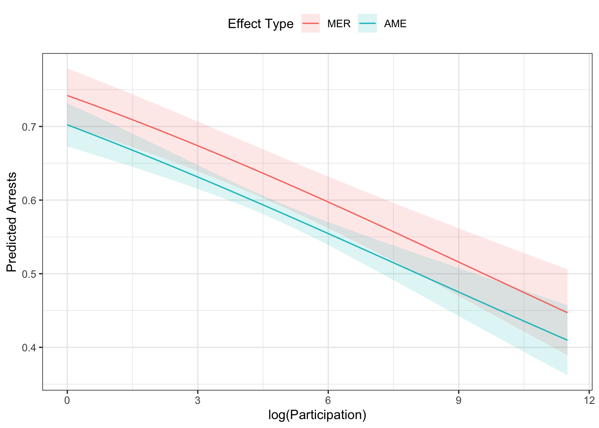
We could also plot this by two different conditions (say the effect of year for afam=“No”, and afam=“Yes”).
library(ggeffects)
g <- ggpredict(mod, terms=c("evyy [n=50]", "afam"))
g2 <- marginaleffects::predictions(mod,
marginaleffects::datagrid(evyy = seq(1960,1990,0.5),
afam = c("No","Yes")))
ggplot(g) +
geom_ribbon(aes(x=x,
y=predicted,
ymin=conf.low,
ymax=conf.high,
fill=group),
alpha=.25,
col="transparent") +
geom_line(aes(x=x, y=predicted, colour=group)) +
theme_bw() +
theme(legend.position="top") +
labs(x = "Year",
y = "Predicted Pr(Arrest)",
colour="African American\nProtest",
fill="African American\nProtest")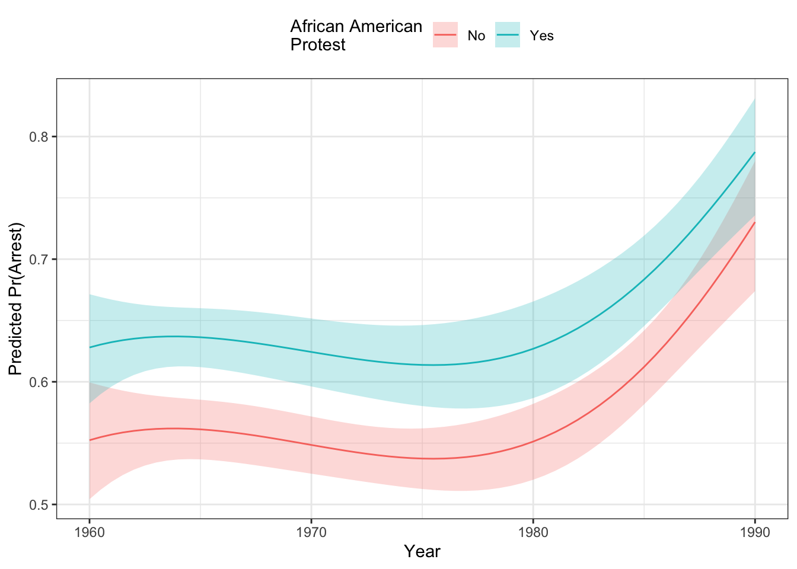
ggplot(g2) +
geom_ribbon(aes(x=evyy,
y=estimate,
ymin=conf.low,
ymax=conf.high,
fill=afam),
alpha=.25,
col="transparent") +
geom_line(aes(x=evyy, y=estimate, colour=afam)) +
theme_bw() +
theme(legend.position="top") +
labs(x = "Year",
y = "Predicted Pr(Arrest)",
colour="African American\nProtest",
fill="African American\nProtest")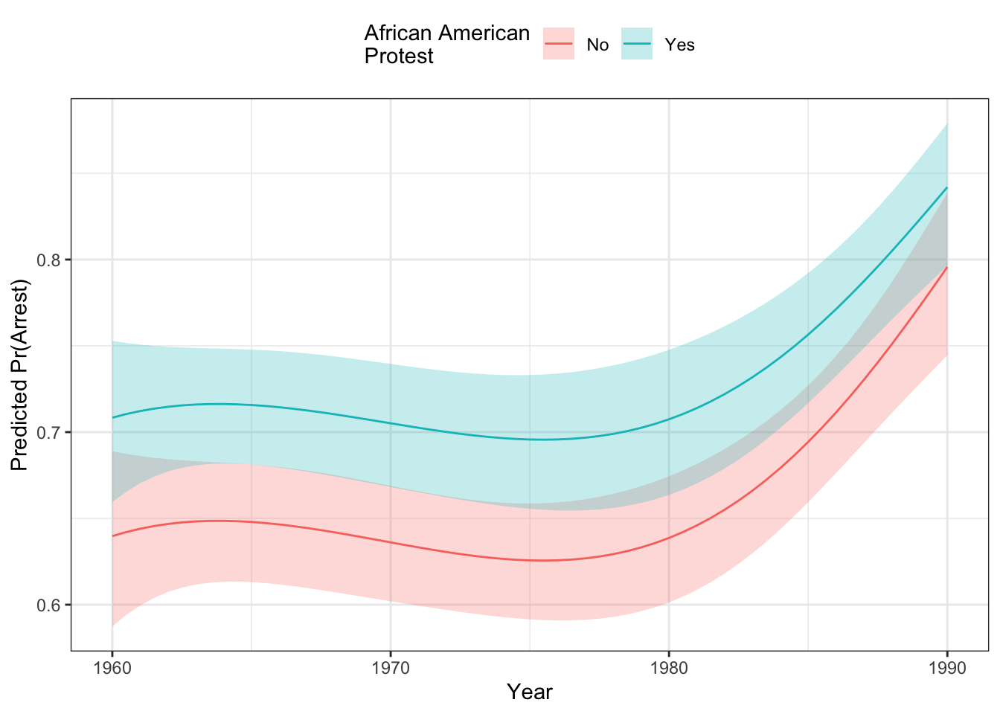 As you can see, African American protests were more likely to experience arrests than primarily white protests over the entire period, though the gap seems to close with both groups seeing more arrests toward the end of the period in the late 1980s. You can see that the difference between the two is bigger at the beginning of the period than later in the period. This is due to the effects of “compression” which brings up the debate about how interactions work in non-linear models like this. We turn to that below.
You Try It!
Plot the effect of sei10 and age for different values of college_ed.
- How do the effects differ based on different methods?
4.4 Interactions in Binary DV Models
Interactions in binary DV models are more complicated than in linear models. In addition to the general added complexity - there is some debate about a) the right method for calculating the effect and b) whether or not a product term is required. We will discuss the different methods for dealing with the first issue below.
As for whether a product term is required initially hinged on whether the user believed that “compression” indicating an interesting interaction. Compression is the phenomenon where marginal effects get smaller in the extremes of the distribution. If \(Pr(y=1) = .99\) already, then the positive effect of any variable is constrained to a really small value (i.e., can’t be more than .01 in terms of a first difference). Those same sorts of constraints are less interesting when \(Pr(y=1) = .5\), where there is lots of room for a variable to have a bigger effect. The two schools of thought are
- Compression is an artifact of the model and as such doesn’t represent a statistically interesting phenomenon. To model a truly conditional relationship, a product term is required (e.g., Bartels).
- Compression does, in fact, identify a certain kind of interaction and as such is statistically meaningful (e.g., Berry, Demeritt and Esarey).
These two sides of the debate are extremes with the right answer probably being somewhere in the middle. For example, without a product term, we showed above that the marginal effect of a variable \(x_j\) is:
\[\frac{\partial \hat{p}}{\partial x_j} = b_j\times f\left(a + bx_j + x_hB\right)\]
Note that since the \(f(\cdot)\) is the evaluation of a probability density function, it’s values are non-negative. So if \(b_j\) is positive, the equation above could not possibly generate a negative effect. I could generate differently sized positive effects, which would be one form of interaction, but the effect could not be negative. So, to have conditional effects that switch signs, you would need a product term in the model.
Carlisle Rainey has an interesting article suggesting, counterintuitively, that including the product term actually allows the model to look more like an additive model by mitigating the effects of compression if the patterns in the data are such. So, here, the inclusion of the product term is not only to “allow for” a conditional effect, it’s also to allow for a more nearly additive effect.
All of this is to say that you can include a product term or not and still potentially have interesting interactivity. Those questions should be addressed by following the procedures described below. In what follows, we’ll consider three different scenarios. In each scenario, I will simulate some data to demonstrate the method’s properties.
- Both variables in the interaction are dummy variables.
- One variable in the interaction is continuous and one is binary.
- Both variables in the interaction are continuous.
4.4.1 Both binary
Let’s make some data first and then estimate the model.
set.seed(1234)
df1 <- tibble(
x1 = as.factor(rbinom(1000, 1, .5)),
x2 = as.factor(rbinom(1000, 1, .4)),
z = rnorm(1000),
ystar = 0 + as.numeric(x1 == "1") - as.numeric(x2 == "1") +
2*as.numeric(x1=="1")*as.numeric(x2=="1") + z,
p = plogis(ystar),
y = rbinom(1000, 1, p)
)
mod1 <- glm(y ~ x1*x2 + z, data=df1, family=binomial)The Norton, Wang and Ai discussion suggests taking the discrete double-difference of the model above with respect to x1 and x2. This is just the probability where x1 and x2 are equal to 1, minus the probability where x1 is 1 and x2 is 0 minus the probability where x2 is 1 and x1 is 0 plus the probability where x1 and x2 are both 0. We could calculate this “by hand” as:
## make the model matrix for all conditions
X11 <- X10 <- X01 <- X00 <- model.matrix(mod1)
## set the conditions for each of the four different
## scenarios above
## x1 = 1, x2=1
X11[,"x11"] <- X11[,"x21"] <- X11[,"x11:x21"] <- 1
## x1=1, x2=0
X10[,"x11"] <- 1
X10[,"x21"] <- X10[,"x11:x21"] <- 0
## x1=0, x2=1
X01[,"x21"] <- 1
X01[,"x11"] <- X01[,"x11:x21"] <- 0
## x1=0, x2=0
X00[,"x11"] <- X00[,"x21"] <- X00[,"x11:x21"] <- 0
## calculate the probabilities
p11 <- plogis(X11 %*% coef(mod1))
p10 <- plogis(X10 %*% coef(mod1))
p01 <- plogis(X01 %*% coef(mod1))
p00 <- plogis(X00 %*% coef(mod1))
eff1 <- p11 - p10 - p01 + p00This is just what the intEff() function does.
The byob$int element of the i1 object above gives the interaction effect, particularly the first column. We can just plot that relative to the effect calculated above to see that they’re the same.
library(ggplot2)
tibble(e1 = eff1, i1 = i1$byobs$int$int_eff) %>%
ggplot(mapping= aes(x=e1, y=i1)) +
geom_point(pch=1) +
theme_bw() +
labs(x="Calculated by Hand", y="intEff Function Output")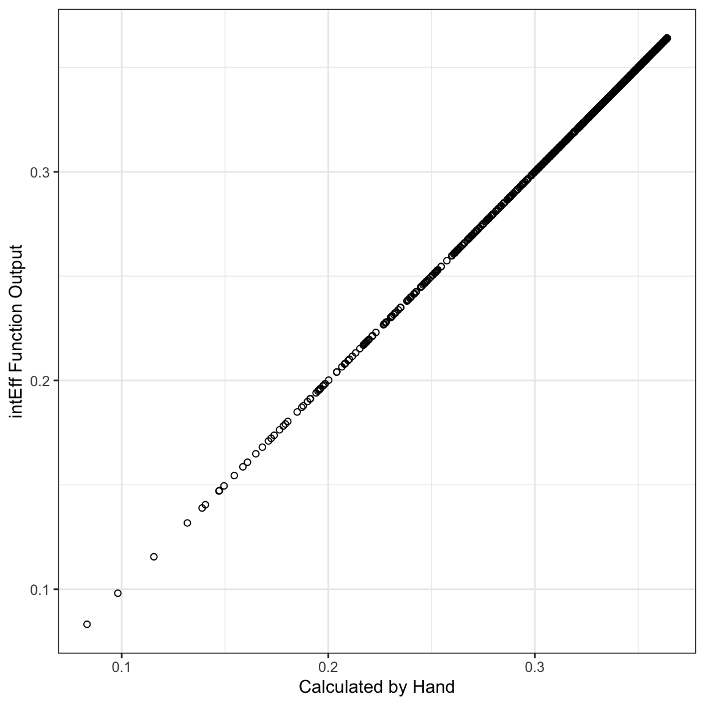
So, the byobs list has two elements - the int element holds the interaction effects for each individual observation. The X element holds the original data. These data were used to calculate the interaction effect, except that the variables involved in the interaction effect were changed as we did above. Here, you could plot a histogram of the effects:
i1$byobs$int %>%
ggplot(mapping=aes(x=int_eff)) +
geom_histogram() +
theme_bw() +
labs(x="Interaction Effect")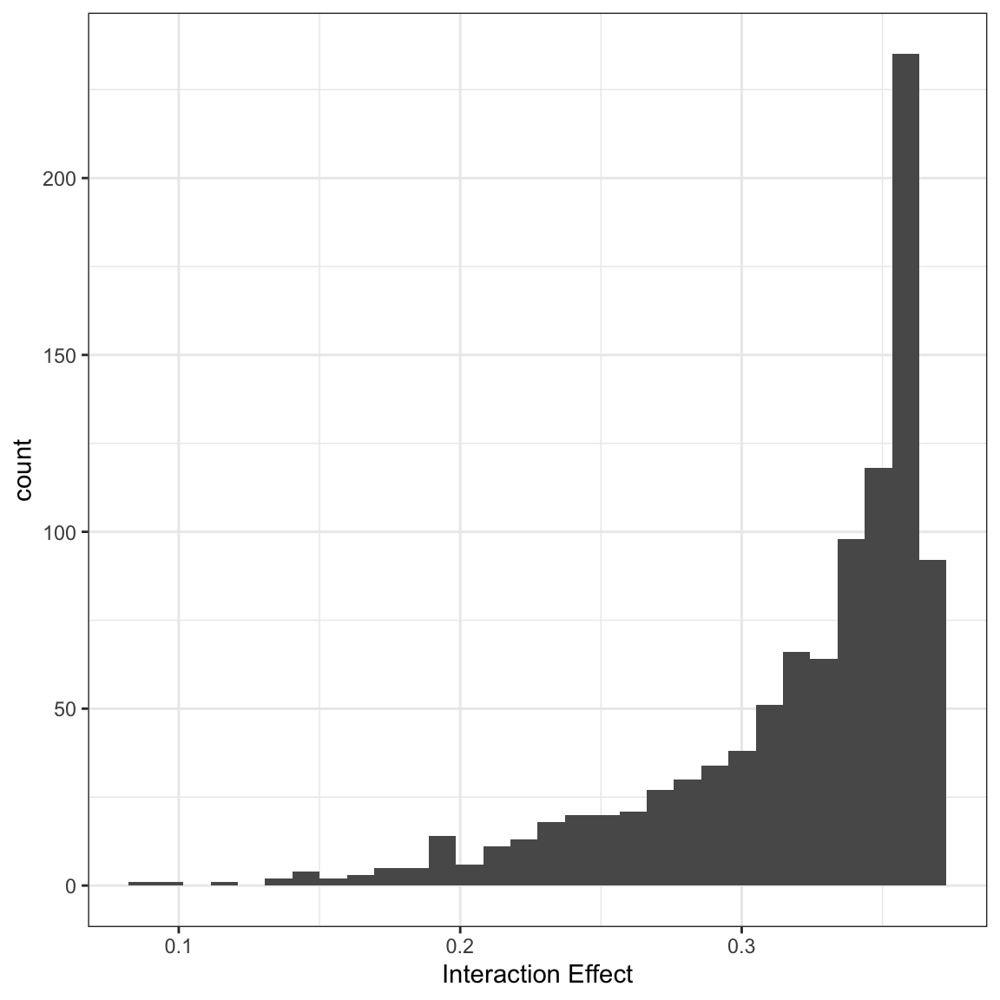
In this case, all of the effects are significant, but you could also break these out by significant and not significant effects:
i1$byobs$int %>%
mutate(sig = ifelse(abs(i1$byobs$int$zstat) > 1.96, 1, 0),
sig = factor(sig, levels=c(0,1), labels=c("No", "Yes"))) %>%
ggplot(mapping=aes(x=int_eff)) +
geom_histogram() +
theme_bw() +
facet_wrap(~sig) +
labs(x="Interaction Effect")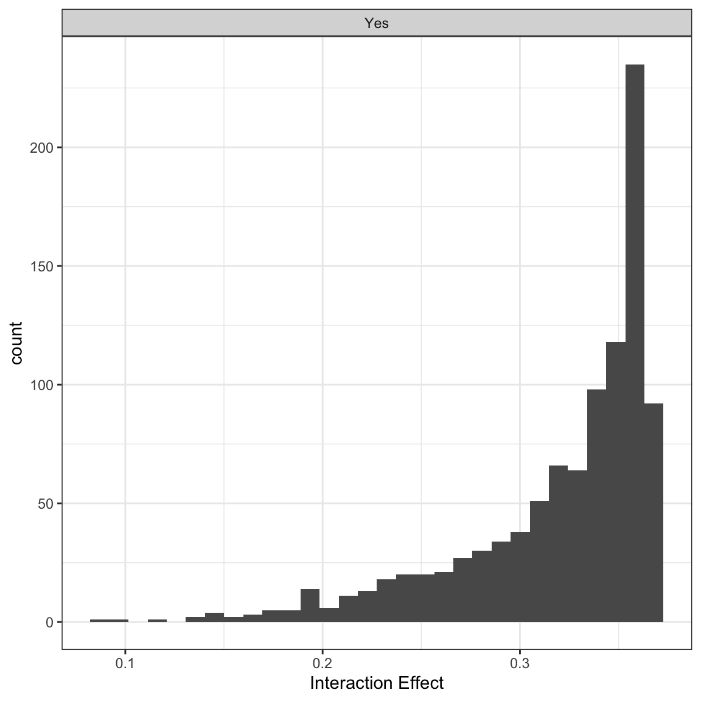
The function avg_predictions in the marginaleffects package does this more generally. This function calculates second differences at user-defined values. and summarises all of the individual second differences like those created above.
marginaleffects::avg_predictions(mod1, variables=list(x1=c(0,1), x2=c(0,1)),
hypothesis = "(b2-b1)-(b4-b3)=0")##
## Hypothesis Estimate Std. Error z Pr(>|z|) S 2.5 % 97.5 % Df
## (b2-b1)-(b4-b3)=0 -0.32 0.0548 -5.84 <0.001 27.5 -0.427 -0.212 Inf
##
## Type: responseThese results all tell us about the change in probability when x2 changes from 0 to 1 under two conditions one when x1 is 1 and one when it is 0. For example, the first row of the byobs$int element of the output from intEff():
## int_eff linear phat se_int_eff zstat
## 1 0.3584801 0.2141966 0.1384038 0.06166805 5.813061suggests that for the first observation, as x2 changes from 0 to 1, the first difference is .35 higher when x1 is 1 than when x1 is 0. The atmean element of i1 shows what this difference is at the average of all of the covariates:
## [[1]]
## int_eff linear phat se_int_eff zstat
## 1 0.3446747 0.4126915 0.6422852 0.05928781 5.813584
##
## $X
## (Intercept) x11 x21 z x11:x21
## [1,] 1 0.518 0.381 0.01450824 0.214.4.2 One binary, one continuous.
With one binary and one continuous variable, the Norton, Wang and Ai model would have us calculate the slope of the line tangent to the logit curve for the continuous variable at both of the values of the categorical variable.
First, let’s make the data and run the model:
set.seed(1234)
df2 <- tibble(
x2 = as.factor(rbinom(1000, 1, .5)),
x1 = runif(1000, -2,2),
z = rnorm(1000),
ystar = 0 + as.numeric(x2 == "1") - x1 +
.75*as.numeric(x2=="1")*x1 + z,
p = plogis(ystar),
y = rbinom(1000, 1, p)
)
mod2 <- glm(y ~ x1*x2 + z, data=df2, family=binomial)Norton, Wang and Ai show that the interaction effect is the difference in the first derivatives of the probability with respect to x1 when x2 changes from 0 to 1. In the following model:
\[\begin{aligned} log\left(\frac{p_i}{1-p_{i}}\right) &= u_i\\ log\left(\frac{p_i}{1-p_{i}}\right) &= b_0 + b_1x_{1i} + b_2x_{2i} + b_3x_{1i}x_{2i} + \mathbf{Z\theta}, \end{aligned}\]
The first derivative of the probability with respect to x1 when `x2 is equal to 1 is:
\[\frac{\partial F(u_i)}{\partial x_{1i}} = (b_1 + b_3)f(u_i)\]
where \(F(u_i)\) is the predicted probability for observation \(i\) (i.e., the CDF of the logistic distribution evaluated at \(u_i\)) and \(f(u_{i})\) is the PDF of the logistic distribution distribution evaluated at \(u_i\). We could also calculate this for the condition when x2 = 0:
\[\frac{\partial F(u_i)}{\partial x_{1i}} = b_1f(u_i)\]
In both cases, this assumes that the values of \(\mathbf{x}_{i}\) are consistent with the condition. For example in the first partial derivative above, \(x_{2i}\) would have to equal 1 and in the second partial derivative, \(x_{2i}\) would have to equal zero. We could do this by hand just to see how it works:
X0 <- X1 <- model.matrix(mod2)
## set the conditions for each of the four different
## scenarios above
## x1 = 1, x2=1
X1[,"x21"] <- 1
X1[,"x1:x21"] <- X1[,"x1"]
## x1=1, x2=0
X0[,"x21"] <- 0
X0[,"x1:x21"] <- 0
b <- coef(mod2)
## print the coefficients to show that the two coefficients
## we want are the second and fifth ones.
b## (Intercept) x1 x21 z x1:x21
## 0.3414514 -0.8653259 0.6186529 0.8542471 0.6109292## calculate the first effect
e1 <- (b[2] + b[5])*dlogis(X1 %*% b)
## calculate the second effect
e2 <- (b[2] )*dlogis(X0 %*% b)
## calculate the probabilities
eff2 <- e1 - e2Just like before, we can also estimate the same effect with intEff() and show that the two are the same.
i2 <- intEff(mod2, c("x1", "x2"), df2)
ggplot(mapping=aes(y = i2$byobs$int[,1], x=eff2)) +
geom_point(pch=1) +
theme_bw() +
labs(x="Calculated by hand", y= "intEff Output")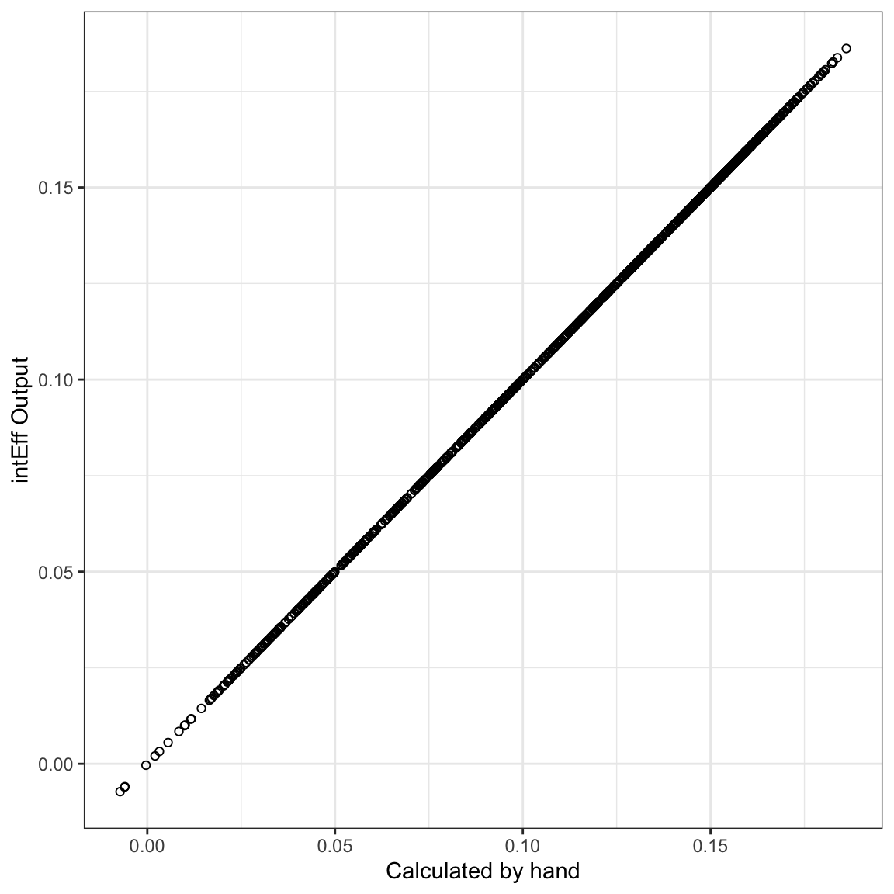
Looking at the first line of the output of i2$byobs$int,
## int_eff linear phat se_int_eff zstat
## 1 0.04013175 0.07137251 0.1350701 0.0233773 1.716697We see that the slope of the line tangent to the logit curve when x1 takes on the value of the first observation (1.350536) is 0.04 higher when x2 = 1 than when x2 = 0. We could visualize this as in the figure below. The solid lines are the logit curves and the dotted lines are the lines tangent to the curves at \(x_1 = 1.350536\). The slope of the blue dotted line is -0.060961 and the slope of the orange dotted line is -0.1010927. You can see that the difference 0.0401317 is the first entry in the int_eff column displayed above.
tmpX1 <- X1[rep(1, 51), ]
tmpX0 <- X0[rep(1, 51), ]
tmpX1[,"x1"] <- tmpX1[,"x1:x21"] <- c(seq(-2, 2, length=50), 1.350536)
tmpX0[,"x1"] <- c(seq(-2, 2, length=50), 1.350536)
tmpX0[,"x1:x21"] <- 0
phat1 <- plogis(tmpX1 %*% b)
phat0 <- plogis(tmpX0 %*% b)
plot.df <- tibble(phat = c(phat0[1:50], phat1[1:50]),
x = rep(seq(-2,2,length=50), 2),
x2 = factor(rep(c(0,1), each=50), levels=c(0,1), labels=c("x2 = 0", "x2 = 1")))
yint1 <- phat1[51] - e1[1]*tmpX1[51, "x1"]
yint0 <- phat0[51] - e2[1]*tmpX0[51, "x1"]
plot.df %>%
ggplot(aes(x=x, y=phat, colour = x2)) +
geom_line() +
scale_colour_manual(values=c("#0072B2", "#D55E00")) +
geom_abline(slope=e1[1], intercept=yint1, colour="#D55E00", lty=3) +
geom_abline(slope=e2[1], intercept=yint0, colour="#0072B2", lty=3) +
theme_bw() +
labs(x="x1", y="Predicted Probability of y=1", colour="x2")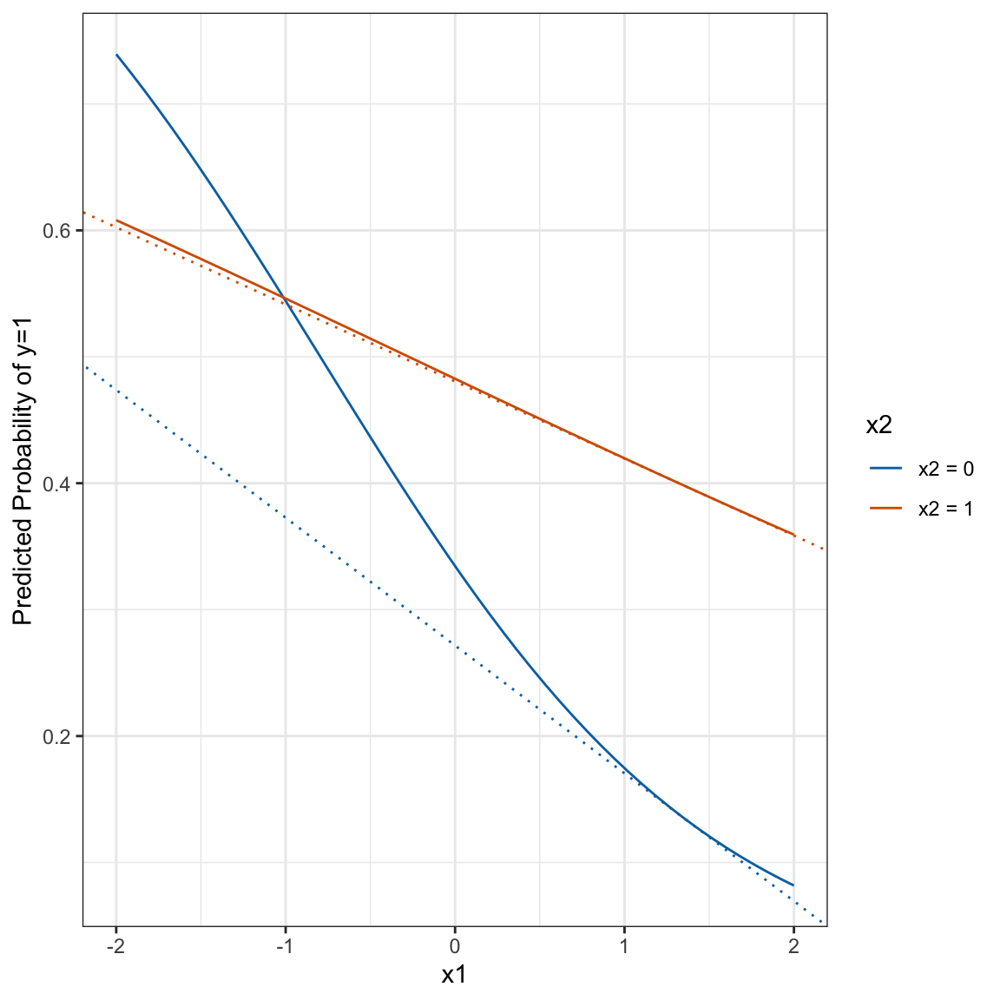
From the zstat entry, we see that the effect is not significant. We can plot the effects by significance.
i2$byobs$int %>%
mutate(sig = ifelse(abs(zstat) > 1.96, 1, 0),
sig = factor(sig, levels=c(0,1), labels=c("No", "Yes"))) %>%
ggplot(mapping=aes(x=int_eff)) +
geom_histogram() +
theme_bw() +
facet_wrap(~sig) +
labs(x="Interaction Effect") +
theme(aspect.ratio=1)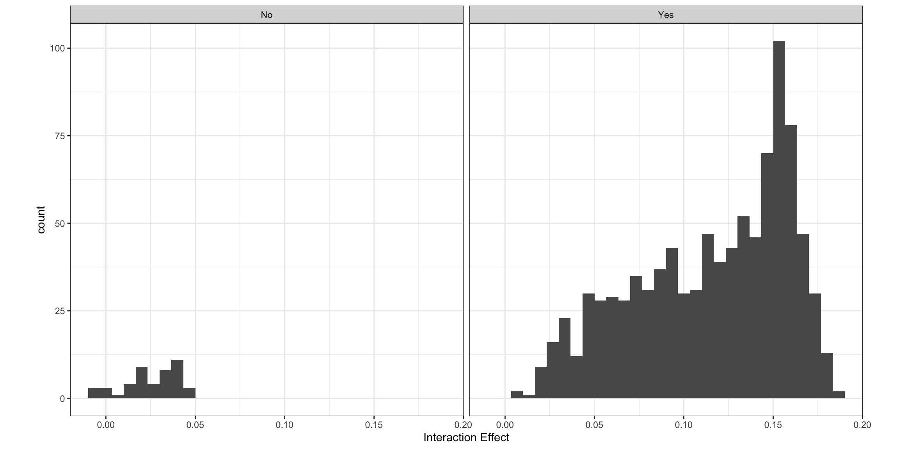
Another option here is to do a second difference. Instead of looking at the difference in the slope of the line tangent to the curve for x1, it looks at how the effect of a discrete change in x1 differs across two values of x2. Using the minimum and maximum as the two values to make the change for x1 is the default. But let’s say that we wanted to see how changing x1 from -2 to -1 change the predicted probability of success for x2=0 and x2=1. The result here is the first
\[\begin{aligned} & \left\{Pr(y=1|x_1=\text{high}, x_2=\text{high}) - Pr(y=1|x_1=\text{low}, x_2=\text{high})\right\} - \\ & \left\{Pr(y=1|x_1=\text{high}, x_2=\text{low}) - Pr(y=1|x_1=\text{low}, x_2=\text{low})\right\} \end{aligned}\]
marginaleffects::avg_predictions(mod2, variables=list(x1=c(-2,-1), x2=c(0,1)),
hypothesis = "(b4-b3)-(b2-b1)=0")##
## Hypothesis Estimate Std. Error z Pr(>|z|) S 2.5 % 97.5 % Df
## (b4-b3)-(b2-b1)=0 0.0792 0.0148 5.36 <0.001 23.5 0.0503 0.108 Inf
##
## Type: responseThe output shows that the change in probabilities is bigger when x2 is low than when x2 is high. This corroborates what we saw in the plot above.
4.4.3 Both Continuous
With two continuous variables using this model:
\[\begin{aligned} log\left(\frac{p_i}{1-p_{i}}\right) &= u_i\\ log\left(\frac{p_i}{1-p_{i}}\right) &= b_0 + b_1x_{1i} + b_2x_{2i} + b_3x_{1i}x_{2i} + \mathbf{Z\theta}, \end{aligned}\]
Norton, Wang and Ai show that the cross-derivative, rate of change in the probabilities as a function of x1 changes as the rate of change in x2 changes.
\[\frac{\partial^2 F(u_{i})}{\partial x_{1i} \partial x_{2i}} = b_3f(u_i) + (b1 + b_3x_{2i})(b_2+b_3x_{1i})f'(u_i)\] where \(f'(u_i) = f(u_i)\times (1-2F(u_{i}))\). We could calculate this “by hand” as:
set.seed(1234)
df3 <- tibble(
x2 = runif(1000, -2,2),
x1 = runif(1000, -2,2),
z = rnorm(1000),
ystar = 0 + as.numeric(x2 == "1") - x1 +
.75*as.numeric(x2=="1")*x1 + z,
p = plogis(ystar),
y = rbinom(1000, 1, p)
)
mod3 <- glm(y ~ x1*x2 + z, data=df3, family=binomial)X <- model.matrix(mod3)
b <- coef(mod3)
e3 <- b[5]*dlogis(X%*% b) + (b[2] + b[5]*X[,"x2"])*(b[3] + b[5]*X[,"x1"])*dlogis(X%*%b)*(1-(2*plogis(X %*% b)))We can content ourselves that these are the same:
## [1] 0.002296147## int_eff linear phat se_int_eff zstat
## 1 0.002296147 -0.01145364 0.1248453 0.005366089 0.4278994So, the effects are the cross-derivative with respect to both x1 and x2. I don’t find this to be a particularly intuitive metric, though we can consider the significance of these values and look at their distribution. I find the second difference metric to be a bit more intuitive because it still gives the difference in change in predicted probabilities for a change in another variable. For example, we could do:
marginaleffects::avg_predictions(mod3, variables=list(x1=c(-1,0), x2=c(-2,2)),
hypothesis = "(b4-b3)-(b2-b1)=0")##
## Hypothesis Estimate Std. Error z Pr(>|z|) S 2.5 % 97.5 % Df
## (b4-b3)-(b2-b1)=0 -0.0832 0.0451 -1.85 0.065 3.9 -0.172 0.00517 Inf
##
## Type: responseThis shows us what happens when we change x1 from -1 to 0 for the two conditions - when x2 is at its minmum versus its maximum. We see that on average the second difference is around -.08 and about 20% of the differences are statistically significant. The average second difference is not, itself, significant. The -0.083 number means the same thing here as it did above. It’s the difference in the first difference of x1 when x2 is high and when x2 is low.
Now, let’s move back to the interaction of year and African American status that we discussed above. We can estimate the model with an interaction between the year polynomial and afam and then look at the analysis of deviance table to evaluate the improvement in fit.
mod2 <- glm(arrdum ~ stats::poly(evyy,3)*afam + ny + south +
logpart + propdam + counterd + standard2 +
extcont2 + govtarg + stratvar + viold,
data=dat, family=binomial)
car::Anova(mod2)## Analysis of Deviance Table (Type II tests)
##
## Response: arrdum
## LR Chisq Df Pr(>Chisq)
## stats::poly(evyy, 3) 33.730 3 2.259e-07 ***
## afam 22.074 1 2.623e-06 ***
## ny 51.173 1 8.456e-13 ***
## south 15.001 1 0.0001074 ***
## logpart 58.439 1 2.097e-14 ***
## propdam 6.199 1 0.0127846 *
## counterd 19.643 1 9.333e-06 ***
## standard2 2.998 1 0.0833841 .
## extcont2 0.388 1 0.5331956
## govtarg 22.367 1 2.252e-06 ***
## stratvar 34.081 1 5.287e-09 ***
## viold 5.657 1 0.0173847 *
## stats::poly(evyy, 3):afam 65.918 3 3.192e-14 ***
## ---
## Signif. codes: 0 '***' 0.001 '**' 0.01 '*' 0.05 '.' 0.1 ' ' 1Note here that the interaction regressors are jointly significant (as evidenced by the last line of the output). We can now look at the second difference. For this to work, we’ll have to use the raw polynomials.
dat$evyy2 <- dat$evyy - 1975
mod2 <- glm(arrdum ~ stats::poly(evyy2,3, raw=TRUE)*afam + ny + south +
logpart + propdam + counterd + standard2 +
extcont2 + govtarg + stratvar + viold,
data=dat, family=binomial)Let’s see what the effect looks like here:
library(ggeffects)
g <- ggpredict(mod2, terms=c("evyy2", "afam"))
ggplot(g) +
geom_ribbon(aes(x=x+1975,
y=predicted,
ymin=conf.low,
ymax=conf.high,
fill=group),
alpha=.25,
col="transparent") +
geom_line(aes(x=x+1975, y=predicted, colour=group)) +
theme_bw() +
theme(legend.position="top") +
labs(x = "Year",
y = "Predicted Pr(Arrest)",
colour="African American\nProtest",
fill="African American\nProtest")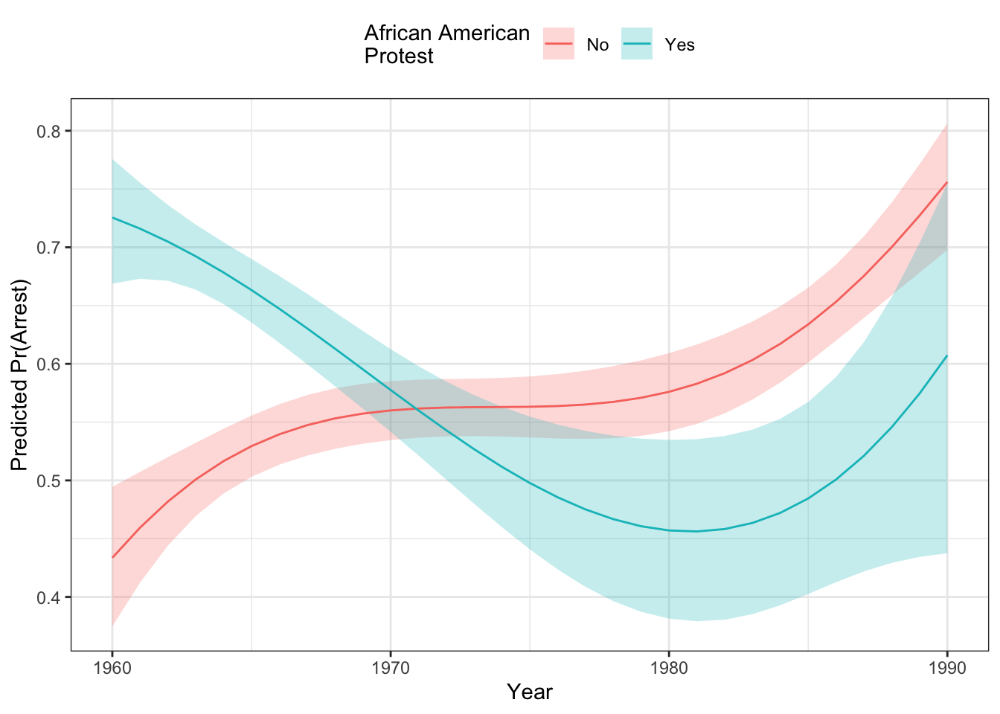 We can look at the output of the second difference function, too:
marginaleffects::avg_predictions(mod2, variables=list(evyy2=c(-15,15), afam=c("No","Yes")),
hypothesis = "(b2-b1)-(b4-b3)=0")##
## Hypothesis Estimate Std. Error z Pr(>|z|) S 2.5 % 97.5 % Df
## (b2-b1)-(b4-b3)=0 0.428 0.099 4.32 <0.001 16.0 0.233 0.622 Inf
##
## Type: responseThe average second difference here is .428, indicating:
\[\begin{eqnarray}\left(Pr(\text{Arrest}|\text{AfAm=Y}, 1990) - Pr(\text{Arrest}|\text{AfAm=N}, 1990)\right) &-& \\ \left(Pr(\text{Arrest}|\text{AfAm=Y}, 1960) - Pr(\text{Arrest}|\text{AfAm=N}, 1960)\right) &>& 0 \end{eqnarray}\]
Thus, there is a significant interaction here of a quite large magnitude. If we had looked at the second difference for the model without the product regressors, here’s what we would have seen.
mod1a <- glm(arrdum ~ stats::poly(evyy2,3, raw=TRUE) + afam + ny + south +
logpart + propdam + counterd + standard2 +
extcont2 + govtarg + stratvar + viold,
data=dat, family=binomial)
marginaleffects::avg_predictions(mod1a, variables=list(evyy2=c(-15,15), afam=c("No","Yes")),
hypothesis = "(b4-b3)-(b2-b1)=0")##
## Hypothesis Estimate Std. Error z Pr(>|z|) S 2.5 % 97.5 % Df
## (b4-b3)-(b2-b1)=0 -0.0165 0.00563 -2.93 0.00342 8.2 -0.0275 -0.00545 Inf
##
## Type: responseThe significant negative interaction is a function of the constraints placed on the model by only having additive regressors and letting compression do the work. The fact that the model with the product regressors fits better means that the positive interaction effect is the one we should pay attention to.
You Try It!
Let’s say that we wanted to evaluate whether or not there is an interaction between age and college_ed.
- Do you need a product term?
- Is there a significant second difference?
- What does the effect look like?
The probci() function in the DAMisc package will calculate AMEs for any number of variables changing at the same time. Here is the code we could use:
pci <- probci(mod2, data=dat,
changeX = c("evyy2", "afam"),
xvals = list("evyy2" = seq(-15, 15, length=12)),
returnProbs=FALSE)Now, we could use the plot.data element of the pci object to make a plot:
pci$plot.data %>%
setNames(c("evyy2", "afam", "pred_prob", "lower", "upper")) %>%
ggplot(aes(x=evyy2+1975,
y=pred_prob,
colour = afam)) +
geom_ribbon(aes(ymin =lower,
ymax=upper,
fill=afam),
alpha=.1,
col="transparent") +
geom_line() +
theme_bw() +
theme(legend.position = "top") +
labs(x="Year",
y="Predicted Pr(Arrest)",
colour="African American\nProtest",
fill="African American\nProtest")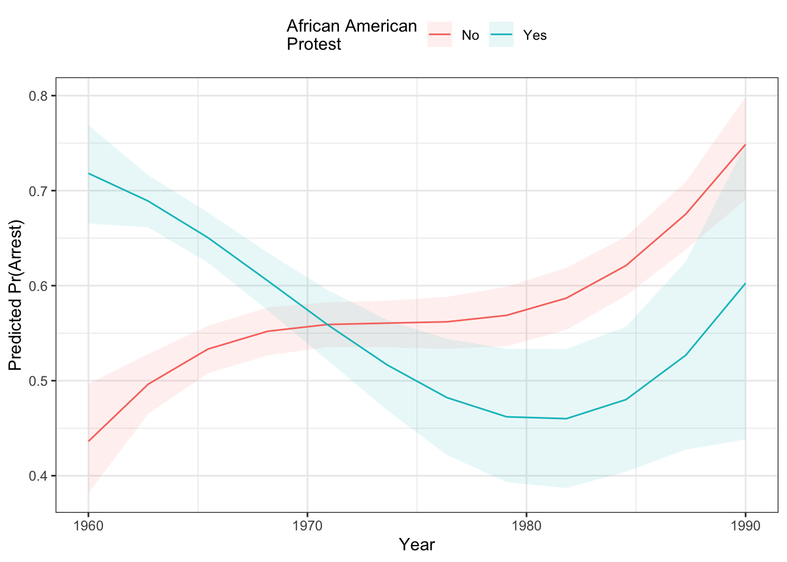
4.5 Other GLMs.
The methods discussed above generally work for other GLMs as well. The discussion of interactions in other GLMs should have a similar flavor. The methods described above should be general enough to handle any model estimated with the glm() function. Much of the literature on interactions in non-linear models is really based on what happens in logistic regression models, though. That said, it is not obvious why these same ideas would apply differently for other probability distributions and likelihood functions.
There is a poisfit() function that returns scalar measures of fit for the Poisson and Negative Binomial models. There is also a poisGOF() function that returns a test of \(V(y) = \mu\) that would identify whether the model has an overdispersed outcome.
The glmChange() and glmChange2() function should also work as do the ggeffect package functions. Because the functions perform in similar ways with other GLMs, I will not belabor them here.
Exercises
Model the relationship between thinking imagination is a good quality in kids (
I_IMAGIN) and secular values, including the same controls as for exercise 4 of chapter 3, using a logit model.Evaluate the model’s fit using the
binfitandprefunctions from theDAMiscpackage and plot the ROC of the model using thepROCpackage.Produce odds ratio for the model.
Produce the MER and AME for
sacsecvalusing the functionsglmChangeandglmChange2from theDAMiscpackage.Create a graph comparing the MER and AME effects for
sacsecval.Create a graph of the MER when we vary
sacsecvalandage_51p.Now let’s add an interaction between
sacsecvalandtrustInstiin the model. Vizualise this effect for low (0), neutral (0.5), and high (1) trust on thetrustInstiscale.